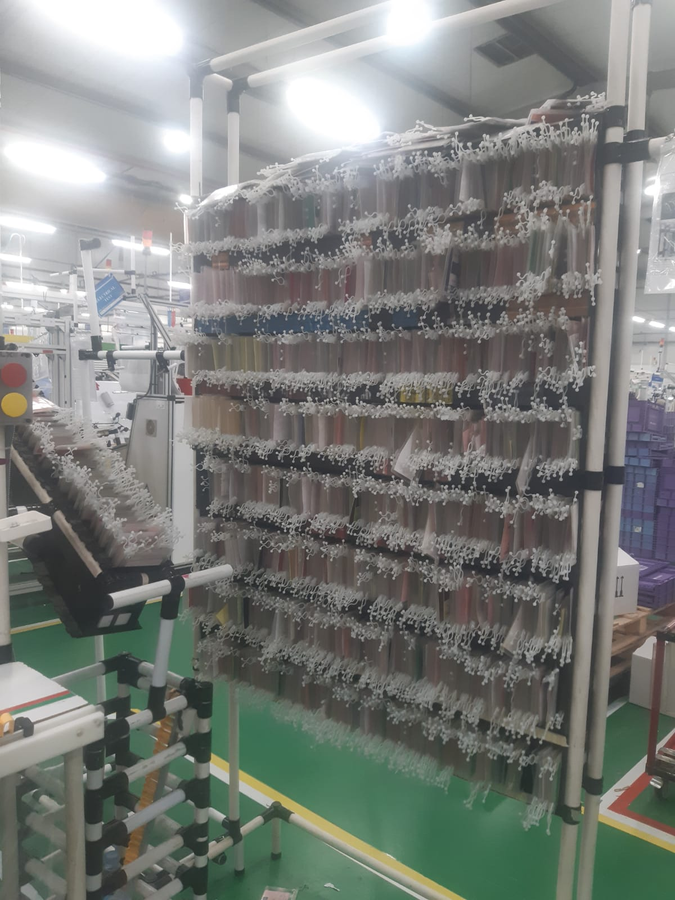
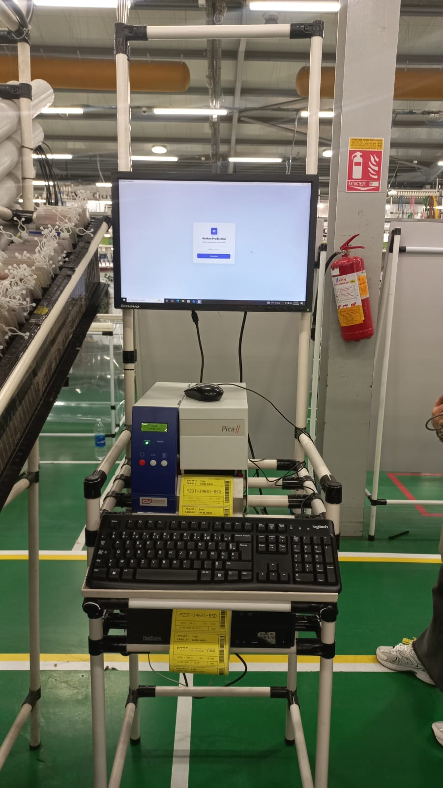
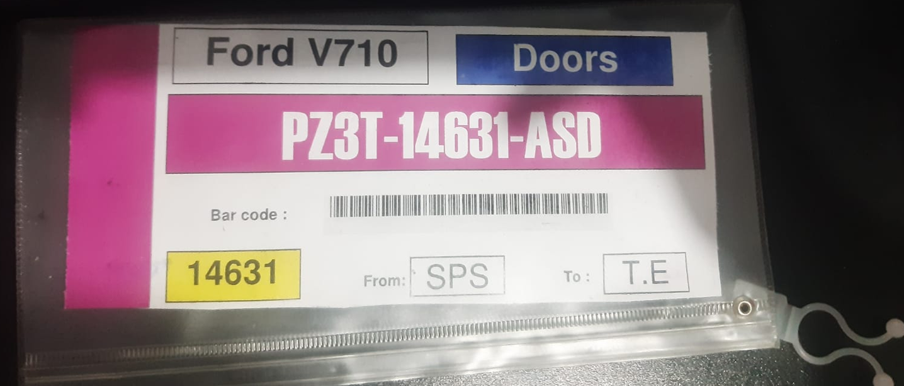
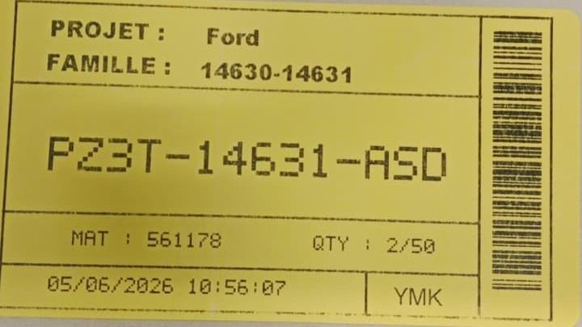

Professional Experience
Projects and contributions in industrial engineering and digital transformation.
Intern - Industrial Engineering Department (PFE)
2026 · Kénitra, Morocco
Yazaki Morocco Kénitra (YMK)
Project: Digitalization of the Kanban System for Ford Production Lines (Ford V710, Zone P3)
- Define: Mapped the manual Kanban card process and identified bottlenecks through Gemba Walks.
- Measure: Collected cycle time and Takt Time data across the production line.
- Analyze: Used Yamazumi charts and root-cause analysis to identify delays and line imbalance.
- Improve: Designed and developed KanbanProd, a desktop application built with JavaScript, HTML, CSS and Electron.
- Control: Validated the solution on the shop floor with production stakeholders.
- Results: Reduced cycle time from 79s to 57.5s, generating estimated annual savings of ~187,600 €.
KanbanProd — Application Screenshots
System Transformation


Kanban Card — Before / After

